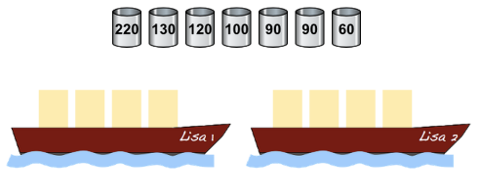

ビ太郎とビバ子は「Lisa 1」と「Lisa 2」という2隻（せき）の船を持っています。
それぞれの船は300キログラム以下の荷物を積んで運ぶことができます。
ビ太郎とビバ子は樽（たる）に入った魚の運搬（うんぱん）を頼まれました。
樽には魚が入った状態の重さ（キログラム）が書かれています。

運びたい樽は7個ありますが，全部を積むことはできません。
2隻の船に積む樽（たる）の重さの合計が一番大きくなる積み方はどれですか？
| Lisa1の船 | Lisa2の船 | 合計 | ||
|---|---|---|---|---|
| 220 60 | 280kg | 130 120 90 | 340kg | 重量オーバー |
| 130 90 60 | 280kg | 120 100 90 | 310kg | 重量オーバー |
| 120 90 90 | 300kg | 220 60 | 280kg | 合計580kg |
| 100 130 60 | 290kg | 120 90 90 | 300kg | 合計590kg（正解） |